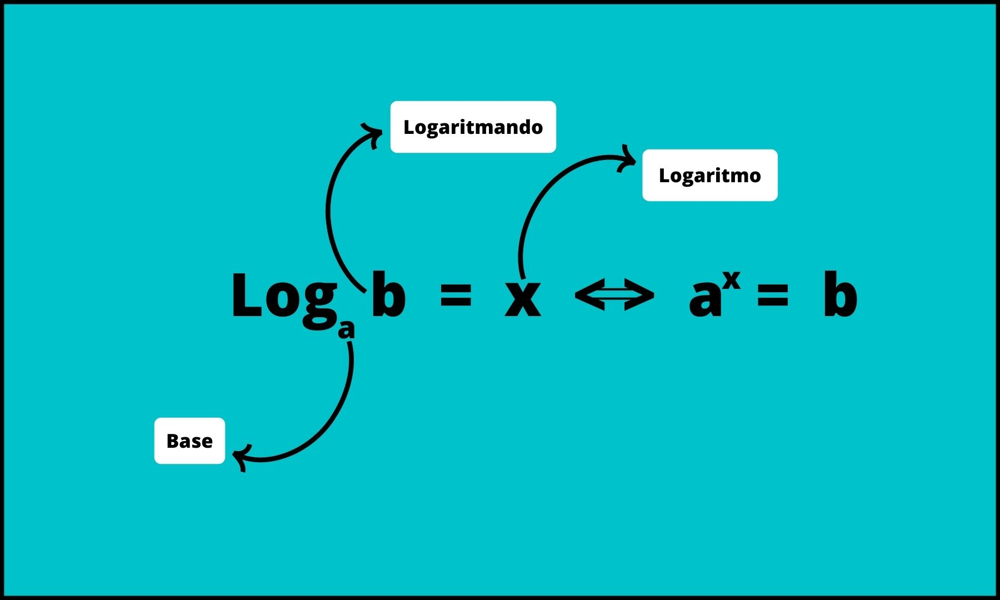
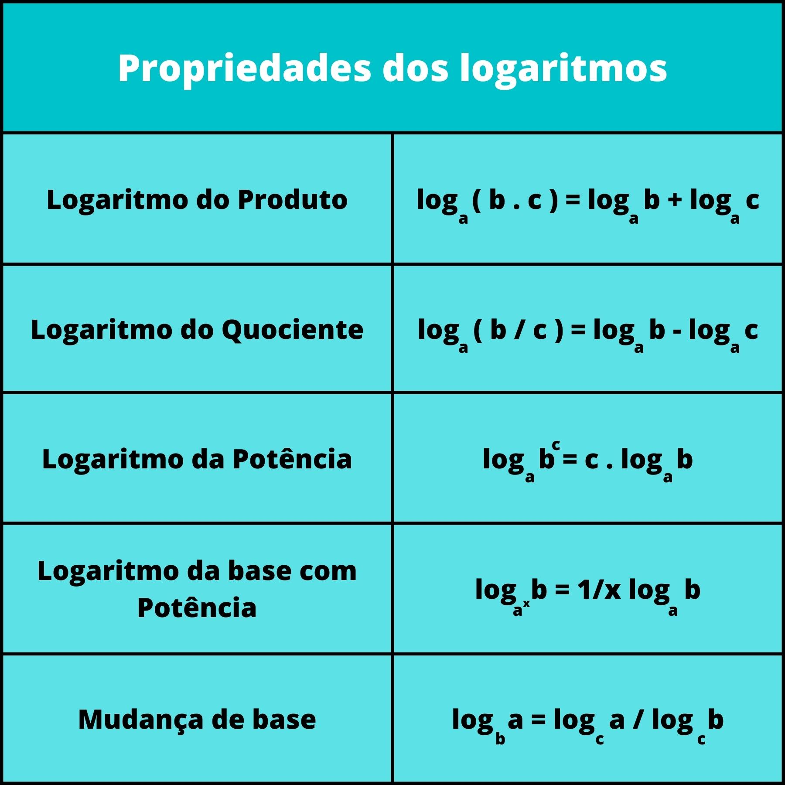
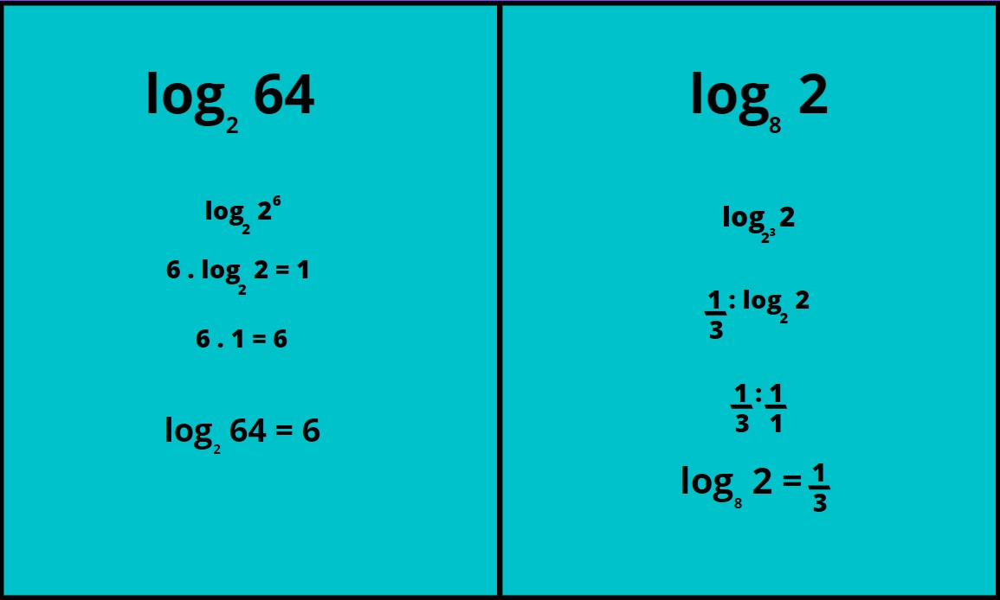
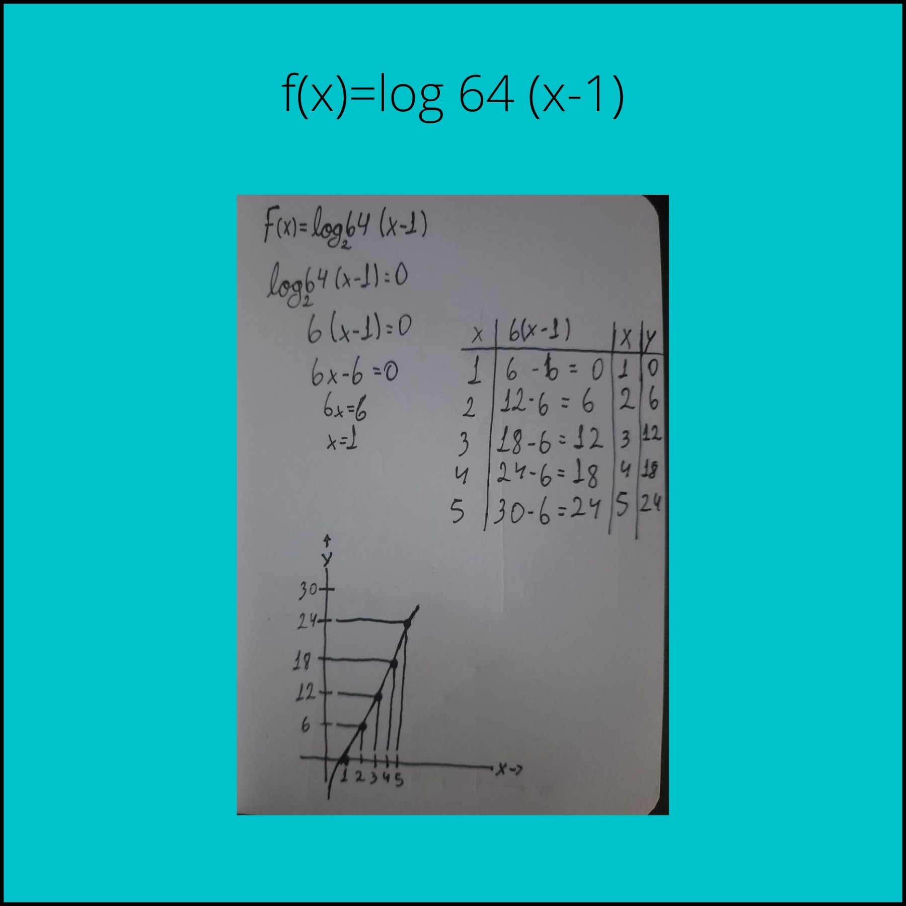

Conteúdos com Dificuldade
Logaritmos
O logaritmo é uma operação matemática diretamente relacionada com as equações exponenciais.
Nele buscamos encontrar o expoente que faz com a base seja igual ao que chamamos de logaritmando.

Se, há na conta algum log com mais de um logaritmando, seja multiplicando ou dividindo,
ele soma o logaritmo de cada um se for multiplicando ou subtrai se for dividindo.

Como calcular?
Para calcular um logaritmo, temos que procurar um número que, quando elevamos a base, resulte no
logaritmando.
Pegando como exemplo o logaritmo de 36 na base 6 do exemplo anterior, devemos encontrar um número que,
quando
elevamos a base 6, resulte em 36. Como 62 = 36, sendo a resposta 2.
Exemplo:

Funções Logarítmicas
Isto é, uma forma de colocar em um gráfico uma função de um logaritmo, achando pontos e fromando um gráfico.
Como calcular?
1º passo: Extrair os elementos para formar o gráfico
Sinal na frente do log, determinando se é crescente ou decrescente
2º passo: Desconbrir o mínimo de x
Indicado pela função dentro do log, como: log 2 ( x + 2 ), essa expresão teria o mínimo de x de, -2.
3º passo: Achar o eixo da reta em Y e X
Fazendo a expresão de log igualando a 0, achando o valor de X
Colocando 5 valores no Y, e substituindo o X, fazendo como um gráfico comum
Os valores de y são determinados pela função, sendo o mínimo de X
Exemplo:
